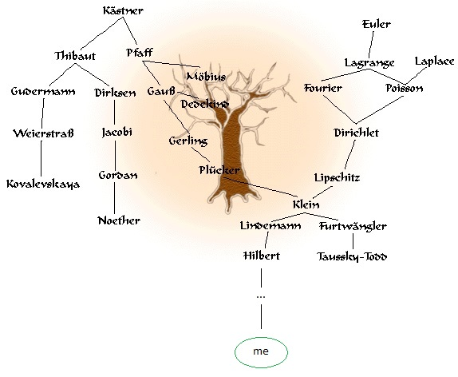

If you are visiting from China, it might be slow to load the pictures, but eventually you will get to see my lovely face. 😜
I am currently a quantitative researcher at JQ Investments, and an industrial advisor at School of Finance, Southwestern University of Finance and Economics. I received my Ph.D. in economics from Stanford University, advised by Alvin Roth. Before coming to Stanford, I got my Bachelor's degrees in mathematics and statistics from UC Berkeley. My research interests lie primarily in game theory, market design, algebraic combinatorics and stochastic systems. In particular, I am interested in understanding the dynamics of reaching a market equilibrium. For example, my past projects include modeling the reequilibration process of vacancy chains through Tarski's fixed point theorem; and analyzing the evolution of black markets with the help of Markov jump processes and random walks. In my free time I enjoy playing video games and that's where I "put game theory to the test". I have always been fascinated with strategic reasoning; and finding the winning strategy is the reason why I decided to get a Ph.D. in game theory in the first place. Some of my past gaming "achievements" can be found in the Trivia page.
If you want to find out more about me, please check out my CV/Resume and research page.
Some academic trivia:
My Erdős number is 4. Erdős-Hoffman-Rothblum-Roth-Wu and also Erdős-Rubel-Blair-Roth-Wu. (Thanks Al!)
My Ph.D. dissertation is Market Structure and Dynamics. And my dissertation defense committee consists of Alvin E. Roth (primary adviser), Itai Ashlagi, Fuhito Kojima, Robert B. Wilson (chair) and Zeyu Zheng. So two Nobel laureates wasted 90 minutes listening to my nonsense (－‸ლ).
David Hilbert is my adviser^6. So I am luckily an academic descendent of both Euler and Gauss and a part of this giant academic family (picture credit to the Mathematics Genealogy Project). My profile in the project can be found here.
Email: wuqingyun at swufe dot edu dot cn